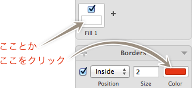
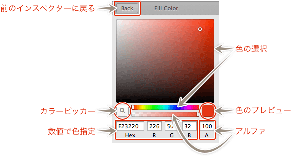
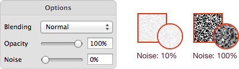
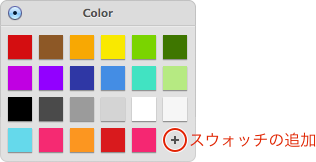
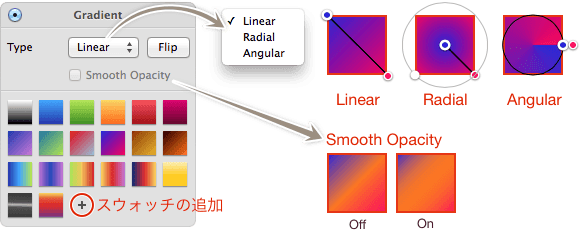
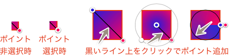
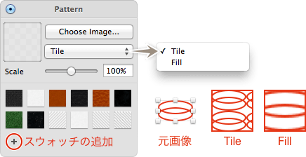

Sketch.app Advent Calender 2013 10日目の記事です。
Sketch.appのインスペクタシリーズ第4弾、塗りと線設定についてお届けします。
Sketchの基本。というSketch（Sketch 3）の基本操作にフォーカスした電子書籍をリリースしました。詳しくはこちらの「Sketchの基本。」のページをご覧ください。
この記事はSketch 2を元にした記事です。最新版の動作とは異なる可能性が高いため、参考程度にご覧ください。
使っている画像がPNG-8bitなため、グラデーション部分にトーンジャンプが見られますが、実際の画面ではきれいなグラデーションです。 ## 塗りと線について オブジェクトにベタ塗り・グラデーション・パターン（塗りのみ）を設定します。
インスペクタを出すには、FillやBordersの色の部分をクリックします。ちなみに、FillもBordersも設定できる項目は同じなので、まとめています。

色の部分は見たまんまで、色を選択します。
虫眼鏡マークはカラーピッカーツールです。ショートカットはControl＋Cです。ショートカット自体は、この色設定を表示しなくても使えます（ただし、この場合で適用されるのは塗り色になります）。
HexまたはRGBの数値で色を選択できます。AはAlphaで、100が不透明です。また、色相環の下にあるバーで、度合いを見ながら設定できます。
［View］→「Show Colors」でOS標準のカラーピッカーを呼び出し、保存している色を使うこともできます。この場合は、直接的に色を適用できないので、一旦色設定を表示してからOSのカラーピッカーで色を選ぶ必要があります。
「Back」ボタンは、前のインスペクタに戻ります。EnterやEscでも戻ることができます。
Options

Noise
グレースケールノイズを入れることができます。等倍表示だとモノクロノイズに見えますが、表示を拡大するとグレースケースになっています。
Blending
パターンを選択している場合に、またはタイプを問わず、2つ目以降の設定をしている場合に表示されます。下にある設定との合成方法を選択します。
Opacity
グラデーションまたはパターンを選択している場合に表示され、不透明度を設定する項目です。
Color

ここで色を選択するとベタになります。＋マークでスウォッチを追加できます。ドラッグで移動と枠外に持っていくと削除できます。
Gradient
グラデーションの設定です。

Type
グラデーションの種類を選択します。「Linear」は直線的なグラデーション・「Radial」は放射状のグラデーション・「Angular」は円を書くようなグラデーションです。
Flip
グラデーションの色を逆転させます。
Smooth Opacity
「Linear」かつポイントが3つの場合でアクティブになります。チェックするとトーンジャンプしないように、グラデーションが滑らかになります。
Swatch
グラデーションのスウォッチです。ベタと同じく、＋マークでスウォッチの追加、ドラッグによる移動や枠外への移動による削除ができます。
グラデーションを適用すると、オブジェクトにグラデーションのラインが表示されます。色を変更するには、ポイントをクリックし、スウォッチやカラーピッカーで選択します。ライン上をクリックすると、新たにポイントが作成できます。
ポイントを選択後、Deleteキーで削除できます。

角度による設定はできませんので、各ポイントを移動して角度を決めます。また「Radial」の場合は、放射線の形を決める楕円のハンドルがあるので、適当な形に変更しましょう。
Pattern
パターンの設定です。Fillにのみ適用できます。

Choose Image…
パターンとする画像を選択します。あまり試していませんが、PNG/JPEG/PSD（互換あり）あたりは読み込めます。画像の透明部分はきちんと透明として扱われます。
Tile / Fill
パターンの埋め方を選択します。「Tile」は名前の通りタイル状に敷き詰め、「Fill」は適用面が埋まるように画像の大きさが調整されます。
Scale
「Tile」を選択するとアクティブになります。そのままですが、パターン画像の大きさです。
Swatch
パターンのスウォッチです。他と同じく、＋マークでスウォッチの追加、ドラッグによる移動や枠外への移動による削除ができます。